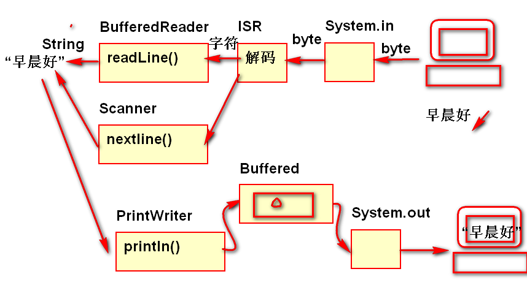
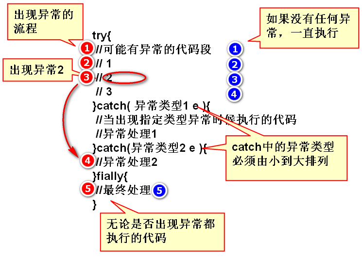
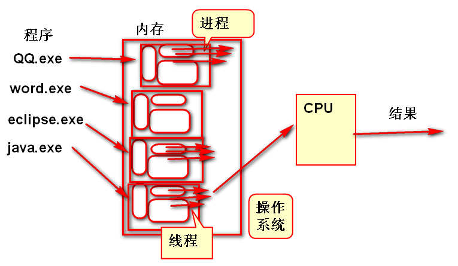

控制台读写：

案例：
InputStreamReader isr =
new InputStreamReader(System.in);
//BufferedReader依赖于isr
BufferedReader in =
new BufferedReader(isr);
//从控制台读取一行文本信息
String s = in.readLine();
//System.out.println(s);
//不要将操作系统控制台流关闭！
/**
* autoFlush 参数，设置为true时候，
* 会在println方法执行结束以后自动
* 调用flush一次
*/
PrintWriter out =
new PrintWriter(System.out,true);
out.println(s);
方法的意外（非正常）结果
Java 编译器不检查RuntimeException及其子类的异常处理规则。不报编译错误。
其他异常（可检查异常）：当调用有异常抛出的方法，必须处理异常，否则将出现编译错误！
程序一旦出现异常，Java异常就去寻找catch语句，处理异常。如果不使用catch处理，当前的线程也会停止。在程序中要合理的使用catch处理异常。
语法
try{
//可能有异常的代码段
}catch( 异常类型1 e ){
//当出现指定类型异常时候执行的代码
//异常处理1
}catch(异常类型2 e ){
//异常处理2
}fially{
//最终处理
}

执行流程案例
try{
String str = null;// "1天" "";
// '0':48 '1':49 '2':50 '3':51
// '0'-48 '1'-48 '2'-48 ...
char CC = str.charAt(0);
int n = CC-'0';
System.out.println(n); //1
}catch(StringIndexOutOfBoundsException e){
System.out.println("你字符串太短");
}catch(NullPointerException e){
System.out.println("不能为空！");
}finally{
System.out.println("最后完成！");
}
异常处理版本的 文件复制：
FileInputStream in = null;
FileOutputStream out = null;
try{
in=new FileInputStream("move.flv");
out=new FileOutputStream("demo.flv");
int n;
byte[] buf = new byte[1024*8];
while((n = in.read(buf))!=-1){
out.write(buf, 0, n);
}
//in.close();
//out.close();
}catch(FileNotFoundException e){
System.out.println("没有文件");
}catch (IOException e) {
System.out.println("读写故障");
}finally{
//finally用于可靠的释放资源！
try{
if(in!=null)//为了避免出现空指针异常
in.close();
if(out!=null)
out.close();
}catch(IOException e){
}
}
throws 声明的目的是将异常发送给上层代码进行处理。
在软件中出现意外情况时候，要根据情况使用throw抛出异常，作为程序的意外结果。
一般情况下，一个方法的正常结果使用return返回，而意外的情况使用throw抛出，方法执行到return或throw语句都会结束方法的执行。
案例：
public static void cp(
String src, String dst)
throws IllegalArgumentException {
FileInputStream in=null;
FileOutputStream out = null;
try {
in=new FileInputStream(src);
out=new FileOutputStream(dst);
int n;
byte[] buf = new byte[1024*8];
while((n=in.read(buf))!=-1){
out.write(buf, 0, n);
}
} catch (FileNotFoundException e) {
e.printStackTrace();
//System.out.println("木有文件!");
//抛出异常，通知调用者，当前算法
//发生了意外情况，throw语句结束
//了当前方法。
throw new IllegalArgumentException(
"木有文件!");
} catch (IOException e) {
e.printStackTrace();
//System.out.println("读写失败!");
throw new IllegalArgumentException(
"读写失败!");
}finally{
try{
if(in!=null) in.close();
if(out!=null) out.close();
}catch(IOException e){
}
}
}
为了完善软件的业务逻辑，是软件的业务功能更加完善健壮经常需要定义自定义异常。
自定义异常
案例：
public class NameOrPwdException extends Exception {
public NameOrPwdException() {
}
public NameOrPwdException(String message) {
super(message);
}
public NameOrPwdException(Throwable cause) {
super(cause);
}
public NameOrPwdException(String message, Throwable cause) {
super(message, cause);
}
public NameOrPwdException(String message, Throwable cause,
boolean enableSuppression, boolean writableStackTrace) {
super(message, cause, enableSuppression, writableStackTrace);
}
}
软件中 并发 执行的过程（方法）。
操作系统采用分时调度策略将多个程序交替运行，宏观的感受是多个程序同时的现象叫 并发

Thread 线索，线程
Thread 封装了操作系统对线程的调度过程。
使用Thread类创建线程
注意：直接执行run方法不是线程执行了！
线程代码
class MyThread extends Thread{
public void run(){
System.out.println(
"Hello World!");
}
}
MyThread t = new MyThread();
t.start();
读取解析CSV文件，将读取结果输出的控制台上
1, tom, 119, 北京海淀区
2, jerry, 110, 北京朝阳区
3, 范传奇, 123456, 北京宣武区
4, 刘苍松, 15601035818, 北京朝阳区